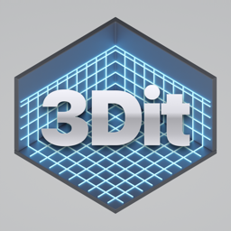

3Dit3Dit
Scan, measure and redesign spaces with LiDAR.
Scan any space
Scan rooms, houses, AV installs and construction sites with your iPhone’s LiDAR. 3Dit builds a clean 3D model, measurements, an inventory and a walkthrough video.
Plan and redesign
Redesign rooms in 3D, line scans up on building plans, map cable runs, and export to SketchUp, Vectorworks and other CAD tools.
Private by design
No account and no tracking. Your scans stay on your device.